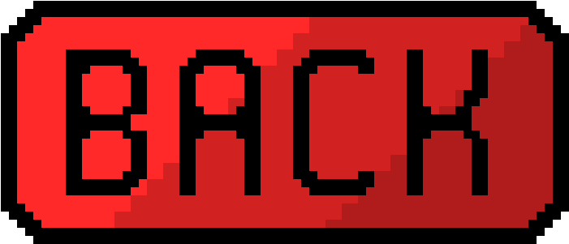

Just today February 2nd, 2026, Notepad++ was compromised in a supply chain attack.
The popular text editor Notepad++ has fallen victim to a supply chain attack, raising concerns about software security. Attackers managed to infiltrate the development environment and inject malicious code into the official Notepad++ installer. Users who downloaded the compromised version were at risk of having their systems infected with malware. This incident highlights the importance of verifying software integrity and the need for developers to implement robust security measures throughout the software development lifecycle.
| Version | Release Date | Status |
|---|---|---|
| 8.5.2 | 2026-01-15 | Safe |
| 8.5.3 | 2026-02-01 | Compromised |